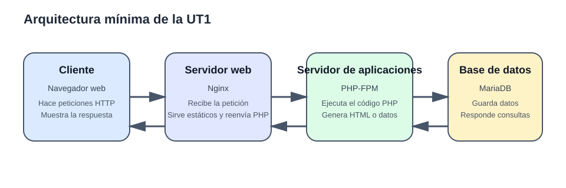
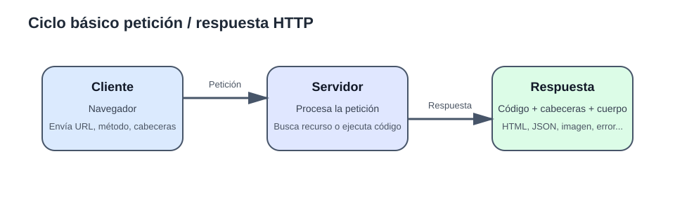
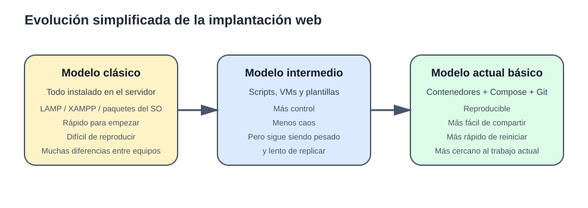

Apuntes de la UT1¶
Idea central de la unidad
En esta UT no vamos a memorizar comandos sueltos. Vamos a entender qué es una aplicación web, qué piezas la forman, cómo se comunican, cómo ha evolucionado su implantación y por qué hoy tiene sentido trabajar con entornos reproducibles.
1. Qué es una aplicación web¶
Una aplicación web es un software al que se accede normalmente a través de un navegador usando una red y el protocolo HTTP o HTTPS.
Cuando abres una web, en realidad no “entras dentro de un programa” como en una aplicación de escritorio. Lo que haces es:
- pedir un recurso o una acción a un servidor;
- el servidor procesa esa petición;
- devuelve una respuesta;
- el navegador interpreta esa respuesta y la muestra.
Metáfora útil¶
Piensa en una aplicación web como en un restaurante:
- el cliente es quien hace el pedido;
- el camarero recoge el pedido y lo lleva a quien corresponde;
- la cocina prepara el plato;
- el almacén guarda ingredientes y datos;
- después el camarero devuelve el resultado al cliente.
En la arquitectura web:
- el navegador hace el pedido;
- el servidor web recibe la petición;
- el servidor de aplicaciones ejecuta la lógica;
- la base de datos guarda y recupera información.
Aplicación web no significa solo “página bonita”¶
Una aplicación web puede ser:
- una web informativa;
- un blog;
- una tienda online;
- una plataforma educativa;
- una intranet;
- una API que no devuelve HTML, sino datos en JSON.
Mini ejercicio 1¶
Trabaja con estos tres ejemplos concretos:
- Aules para entrar en una asignatura y leer un tema.
- Gmail web para consultar la bandeja de entrada.
- OpenStreetMap para ver un mapa en el navegador.
Copia esta tabla en tu cuaderno o en un archivo Markdown y complétala:
| Aplicación web | ¿El usuario ve HTML, datos o ambas cosas? | Explicación breve |
|---|---|---|
| Aules | ||
| Gmail web | ||
| OpenStreetMap |
Después redacta una respuesta de dos frases exactas a esta pregunta: ¿por qué una aplicación web no es lo mismo que un programa de escritorio?
2. Páginas estáticas y páginas dinámicas¶
2.1. Página estática¶
Una página estática es aquella cuyo contenido se entrega tal y como está almacenado en un archivo.
Ejemplos típicos:
index.html- una hoja de estilos CSS
- una imagen
- un PDF
El servidor web solo tiene que:
- localizar el archivo;
- enviarlo al cliente.
2.2. Página dinámica¶
Una página dinámica se genera o se modifica en el momento de la petición.
Eso puede ocurrir porque:
- ejecuta código del lado servidor;
- consulta una base de datos;
- personaliza el contenido según el usuario;
- responde a formularios o sesiones.
Ejemplo:
- un panel de usuario que muestra su nombre;
- una tienda que filtra productos;
- una noticia que se lee desde una base de datos.
Ejemplo sencillo¶
Estática:
Dinámica (conceptualmente):
En el segundo caso, el HTML final no está escrito completo en un archivo fijo: se genera.
Qué suele confundir al alumnado¶
Una página puede verse “normal” en el navegador y, sin embargo, haberse generado dinámicamente antes de llegar al cliente.
El navegador solo ve el resultado final.
Mini ejercicio 2¶
Clasifica estos cinco casos como estático, dinámico o mixto y escribe una justificación de una línea para cada uno:
https://intranet-centro.example/assets/logo-centro.pnghttps://ut1.example/index.htmlhttps://ut1.example/noticias.php?id=8https://api.ut1.example/productoshttps://ut1.example/catalogo.html, donde el HTML inicial carga después los productos con JavaScript desde/api/productos
3. Componentes de una aplicación web¶
3.1. Vista general¶

En esta unidad vamos a trabajar con una arquitectura mínima pero realista:
- cliente: navegador;
- servidor web: Nginx;
- servidor de aplicaciones: PHP-FPM;
- base de datos: MariaDB.
3.2. Cliente¶
El cliente suele ser el navegador.
Su trabajo principal es:
- hacer la petición;
- enviar formularios;
- interpretar HTML, CSS y JavaScript;
- mostrar la respuesta al usuario.
3.3. Servidor web¶
El servidor web es la puerta de entrada.
Se encarga de:
- escuchar peticiones HTTP/HTTPS;
- localizar recursos estáticos;
- devolver respuestas;
- reenviar ciertas peticiones al componente que debe procesarlas.
Opciones habituales¶
- Nginx
- Apache HTTP Server
- Caddy
Diferencia rápida entre ellos¶
- Apache ha sido históricamente muy usado y es muy flexible.
- Nginx es muy habitual como servidor web y reverse proxy.
- Caddy es una opción moderna y muy cómoda para configuraciones sencillas.
Qué significa aquí “reverse proxy”¶
El término reverse proxy puede sonar más complejo de lo que realmente necesitamos en esta UT.
Puedes entenderlo así:
- el navegador habla primero con Nginx;
- Nginx recibe la petición;
- y, si hace falta, Nginx la reenvía al servicio interno que realmente debe procesarla.
En nuestro stack, eso significa que el cliente no habla directamente con PHP-FPM ni con MariaDB. Habla con Nginx, y Nginx decide si responde por sí mismo o si pasa el trabajo a otro servicio.
Dicho de forma simple, un reverse proxy es una pieza que se coloca delante de otros servicios y les reparte o reenvía peticiones.
Por qué nos interesa esta idea en UT1¶
Porque ayuda a entender una separación muy importante:
- Nginx se encarga de recibir HTTP y de servir archivos estáticos;
- PHP-FPM se encarga de ejecutar el código PHP;
- MariaDB se encarga de guardar datos.
No hace falta profundizar ahora en todos los usos de un reverse proxy. Para esta unidad basta con esta idea práctica: Nginx es la puerta de entrada y también la pieza que puede reenviar la petición al servicio adecuado.
En esta UT usaremos Nginx porque nos permite visualizar bien su papel como servidor web y como pieza que reenvía las peticiones PHP.
3.4. Servidor de aplicaciones¶
Aquí es donde vive la lógica del lado servidor.
Su trabajo es:
- ejecutar el código;
- procesar formularios;
- aplicar reglas de negocio;
- consultar la base de datos;
- generar la respuesta.
Ojo con una confusión muy habitual¶
En entornos docentes se usa a veces “servidor web” para todo, pero no siempre es correcto.
En nuestro stack:
- Nginx no ejecuta PHP por sí mismo;
- PHP-FPM sí ejecuta PHP.
Qué es exactamente PHP-FPM¶
Aquí conviene separar tres ideas que el alumnado suele mezclar:
- PHP es el lenguaje y también el intérprete capaz de ejecutar código PHP;
- Nginx es el servidor web que recibe la petición HTTP;
- PHP-FPM es el servicio que se queda esperando peticiones para ejecutar archivos PHP de forma eficiente.
Las siglas FPM significan FastCGI Process Manager.
Dicho de forma simple: PHP-FPM es una forma de tener PHP funcionando como un servicio preparado para atender peticiones que le reenvía el servidor web.
En vez de que Nginx “se invente” cómo ejecutar PHP, Nginx pasa la petición a PHP-FPM y PHP-FPM la procesa.
Entonces, ¿por qué no decimos solo “PHP”?¶
Porque decir solo PHP no aclara cómo se está ejecutando.
Por ejemplo:
- puedes usar PHP en terminal con
php archivo.php; - puedes tener PHP integrado de otra manera en un servidor web;
- o puedes usar PHP-FPM, que es la opción que vamos a emplear en esta UT.
En nuestro caso no basta con saber que la aplicación está escrita en PHP. También hay que saber qué componente del stack ejecuta ese código cuando llega una petición web.
Qué significa aquí “servicio que ejecuta la aplicación” (runtime)¶
La palabra runtime puede sonar abstracta, pero en esta unidad puedes entenderla como el servicio que ejecuta la aplicación.
- es el entorno o servicio que ejecuta el código de la aplicación;
- recibe la orden de procesar un archivo o una petición;
- y devuelve el resultado para que el servidor web lo entregue al navegador.
En nuestro stack, cuando hablamos del servicio que ejecuta la aplicación o del runtime PHP, nos referimos de forma práctica a PHP-FPM como servicio que ejecuta el código PHP.
Flujo real simplificado con PHP-FPM¶
- El navegador pide una URL.
- Nginx recibe la petición.
- Si es un recurso estático, Nginx responde directamente.
- Si es un archivo PHP, Nginx reenvía la petición a PHP-FPM.
- PHP-FPM ejecuta el código PHP.
- PHP-FPM devuelve la salida a Nginx.
- Nginx entrega la respuesta al navegador.
Por qué se usa PHP-FPM en lugar de “solo PHP” en este stack¶
- porque separa mejor el papel del servidor web y el de la ejecución de la aplicación;
- porque permite que Nginx se centre en servir HTTP, archivos estáticos y proxy;
- porque es una forma muy habitual de trabajar con PHP en despliegues actuales;
- porque encaja muy bien con contenedores separados, donde cada servicio tiene una responsabilidad clara.
Para esta UT, la idea importante no es memorizar FastCGI en profundidad, sino entender esto: Nginx atiende la parte web y PHP-FPM ejecuta la parte PHP.
Opciones habituales según tecnología¶
- PHP-FPM para PHP
- Node.js para aplicaciones JavaScript del lado servidor
- Gunicorn/Uvicorn para Python
- Tomcat para aplicaciones Java
No hace falta que domines todas ahora. Lo importante es entender que el servidor web y el servidor de aplicaciones pueden ser piezas separadas.
3.5. Base de datos¶
La base de datos se encarga de guardar información persistente.
Ejemplos de lo que almacena:
- usuarios;
- productos;
- pedidos;
- publicaciones;
- registros;
- sesiones, según el diseño.
Opciones habituales¶
- MariaDB / MySQL
- PostgreSQL
- SQLite
- MongoDB
Qué debes sacar de aquí¶
- MariaDB/MySQL son muy comunes en entornos PHP y CMS clásicos.
- PostgreSQL tiene mucha presencia en aplicaciones modernas y proyectos exigentes.
- SQLite viene bien para entornos ligeros o pruebas.
- MongoDB representa otro modelo distinto, no relacional.
En esta unidad trabajaremos con MariaDB, porque encaja muy bien con PHP y con muchos stacks habituales de implantación web.
Mini ejercicio 3¶
Completa la siguiente tabla usando todas las herramientas de la lista y sin repetir ninguna:
- Nginx
- Apache HTTP Server
- Caddy
- PHP-FPM
- Node.js
- Tomcat
- MariaDB
- PostgreSQL
- MongoDB
| Herramienta | Tipo de componente | Tarea principal |
|---|---|---|
| Nginx | ||
| Apache HTTP Server | ||
| Caddy | ||
| PHP-FPM | ||
| Node.js | ||
| Tomcat | ||
| MariaDB | ||
| PostgreSQL | ||
| MongoDB |
Después responde de forma directa:
- ¿Qué error conceptual cometería un alumno si intentara guardar usuarios dentro de Nginx como si fuera una base de datos?
- ¿Qué problema concreto tendría una tienda online si no tuviera persistencia?
4. Arquitectura y flujo de procesamiento¶
Ahora ya podemos ver el recorrido completo.
Escenario 1. Recurso estático¶
- El navegador pide
/logo.png. - El servidor web localiza el archivo.
- Lo devuelve directamente.
- No hace falta ejecutar PHP ni consultar la base de datos.
Escenario 2. Recurso dinámico¶
- El navegador pide
/index.phpo una ruta asociada a lógica PHP. - Nginx recibe la petición.
- Nginx reenvía el procesamiento al servicio PHP-FPM.
- PHP ejecuta el código.
- Si hace falta, PHP consulta la base de datos.
- PHP genera la salida.
- Nginx devuelve la respuesta al cliente.
Esquema mental sencillo¶
Cliente pide -> Servidor web decide ->
si es estático: responde
si es dinámico: delega en el servicio que ejecuta la aplicación (runtime)
ese servicio puede consultar la BD
genera la respuesta
Importancia de separar responsabilidades¶
Separar servicios tiene varias ventajas:
- cada pieza hace una cosa concreta;
- es más fácil detectar dónde falla algo;
- se puede reiniciar o reemplazar una pieza sin rehacer todo;
- se parece más a cómo se trabaja hoy en muchos entornos reales.
Mini ejercicio 4¶
Trabaja con este stack de la unidad:
- navegador
- Nginx
- PHP-FPM
- MariaDB
Para cada petición, escribe el recorrido exacto paso a paso usando el formato origen -> destino -> destino...:
- El usuario abre
http://localhost:8080/logo.png - El usuario abre
http://localhost:8080/index.php?seccion=inicio - El usuario envía por
POSTel formulario dehttp://localhost:8080/crear.phpy la aplicación inserta un registro en la base de datos
5. Protocolo HTTP: la lengua en la que se entienden cliente y servidor¶
Si la aplicación web fuera una oficina, HTTP sería el idioma común que usan cliente y servidor para entenderse.
5.1. Qué es HTTP¶
HTTP es un protocolo de comunicación que define:
- cómo se hace una petición;
- cómo responde el servidor;
- qué métodos existen;
- qué significado tienen los códigos de estado;
- qué información adicional viaja en las cabeceras.
5.2. Estructura básica de una petición¶
Una petición HTTP suele incluir:
- método: qué se quiere hacer;
- ruta o URL: qué recurso se pide;
- cabeceras: información adicional;
- cuerpo: datos, si la petición los envía.
Ejemplo conceptual:
5.3. Estructura básica de una respuesta¶
Una respuesta HTTP suele incluir:
- código de estado;
- cabeceras;
- cuerpo.
Ejemplo conceptual:
5.4. Ciclo petición / respuesta¶

5.5. Métodos HTTP más habituales¶
| Método | Uso habitual | Ejemplo típico |
|---|---|---|
GET |
pedir información | ver una página o un listado |
POST |
enviar datos para crear o procesar | enviar un formulario |
PUT |
reemplazar un recurso | actualizar un recurso completo |
PATCH |
modificar parcialmente | cambiar solo un campo |
DELETE |
eliminar | borrar un recurso |
En esta UT vas a ver sobre todo GET y POST.
5.6. Códigos de estado más habituales¶
2xx: todo ha ido bien¶
200 OK201 Created
3xx: redirecciones¶
301 Moved Permanently302 Found
4xx: error del cliente o recurso no disponible¶
400 Bad Request401 Unauthorized403 Forbidden404 Not Found
5xx: error del servidor¶
500 Internal Server Error502 Bad Gateway503 Service Unavailable
5.7. Cómo ver una petición y una respuesta de verdad¶
Tienes varias opciones sencillas:
Opción A. Herramientas del navegador¶
- Abre una web.
- Pulsa
F12o abre las herramientas de desarrollador. - Ve a la pestaña Network / Red.
- Recarga la página.
- Observa método, código de estado, cabeceras y tipo de recurso.
Opción B. curl¶
Desde terminal puedes hacer pruebas muy simples:
Opción C. Cliente HTTP visual¶
Si prefieres algo gráfico, puedes usar un cliente HTTP visual y comparar lo que ves con curl y con las herramientas del navegador.
Mini ejercicio 5¶
Analiza esta petición y esta respuesta HTTP:
HTTP/1.1 200 OK
Server: nginx/1.27.0
Content-Type: application/json
Content-Length: 55
[{"id":1,"nombre":"Teclado"},{"id":2,"nombre":"Ratón"}]
Responde:
- ¿Cuál es el método HTTP?
- ¿Qué ruta se está pidiendo?
- ¿Cuál es el código de estado?
- Escribe una cabecera de petición y una cabecera de respuesta.
- ¿El servidor está devolviendo HTML o datos? Indica el tipo exacto.
Investiga las cabeceras más habituales de petición y de respuesta e indica para qué se utilizan.
6. Del modelo clásico LAMP al entorno reproducible¶
La implantación de aplicaciones web no siempre se ha hecho igual.

6.1. Modelo clásico: instalar todo en el sistema¶
Durante muchos años fue muy normal trabajar con un modelo como este:
- Linux
- Apache
- MySQL / MariaDB
- PHP
Todo se instalaba directamente en el sistema operativo.
Ventajas del modelo clásico¶
- ayuda a entender de dónde sale cada pieza;
- es muy directo conceptualmente;
- históricamente ha sido muy utilizado.
Desventajas del modelo clásico¶
- cada equipo puede quedar distinto;
- aparecen conflictos de versiones;
- cuesta replicar el entorno;
- reinstalar o limpiar puede ser pesado;
- el “en mi ordenador funciona” aparece con mucha facilidad.
6.2. Hacia la reproducibilidad¶
Con el tiempo empezó a ser más importante:
- definir el entorno como código o configuración;
- levantarlo rápido;
- compartirlo con otras personas;
- poder destruirlo y reconstruirlo;
- reducir diferencias entre equipos.
Ahí entran en juego herramientas como:
- Git para versionar;
- Docker para empaquetar y ejecutar servicios;
- Docker Compose para describir varios servicios juntos.
6.3. Qué significa que un entorno sea reproducible¶
Que otra persona, siguiendo unos pasos razonables, pueda obtener el mismo entorno o uno muy parecido sin tener que reconstruirlo a mano desde cero.
Ejemplo mental¶
- Modelo clásico: “instala Apache, luego PHP, luego la BD, toca estos 7 ficheros y reza para que todo coincida”.
- Modelo reproducible: “clona el repo, revisa el
.env, ejecutadocker compose up -dy comprueba”.
No es magia. Sigue habiendo configuración. Pero está mucho más estructurada, documentada y portable.
Mini ejercicio 6¶
Completa esta tabla escribiendo en cada fila solo una de estas dos opciones:
- LAMP clásico
- Entorno reproducible con Git + Docker Compose
| Situación | Opción correcta |
|---|---|
| Cada alumno instala manualmente Apache, PHP y MariaDB en su sistema operativo. | |
Todo el grupo usa el mismo compose.yaml y los mismos nombres de servicio. |
|
| Cambiar de ordenador obliga a repetir la instalación paso a paso. | |
El proyecto se puede clonar y levantar con docker compose up -d. |
|
| Dos alumnos pueden tener versiones distintas de PHP sin darse cuenta. | |
| La configuración principal del entorno queda descrita en ficheros del proyecto. |
Después escribe una conclusión de una sola frase: cuál de los dos modelos encaja mejor con esta UT y por qué.
7. Herramientas actuales de la implantación web en esta UT¶
7.1. Git: control de versiones y orden de trabajo¶
Git no se usa en esta unidad para hacer ramas complejas ni trabajo colaborativo avanzado. Se usa porque es una herramienta profesional básica.
Para qué nos sirve aquí¶
- guardar el proyecto;
- registrar cambios;
- compartir la práctica;
- evitar trabajar con carpetas desordenadas;
- mantener un
README.mdy una estructura limpia.
Qué debes saber hacer en esta UT¶
Mini ejercicio 7¶
Ejecuta exactamente estas acciones en una carpeta de prueba llamada ut1-git-prueba:
- Crea la carpeta y entra en ella.
- Inicializa un repositorio Git.
- Crea un archivo
README.mdcon este contenido exacto:
- Haz un commit con este mensaje exacto:
Inicializa entorno de prueba UT1. - Añade al final del README esta línea exacta:
- Ejecuta
git status. - Anota qué archivos aparecen preparados para commit y cuáles aparecen modificados.
7.2. Docker: encapsular servicios¶
Docker permite ejecutar aplicaciones y servicios en contenedores.
Idea simple¶
Un contenedor no es “una máquina virtual pequeña”, aunque a veces el alumno lo imagine así. Para esta unidad es mejor entenderlo como:
- una forma de ejecutar un servicio con su configuración y su entorno;
- una pieza aislada del resto;
- algo que se puede levantar, parar y reemplazar con facilidad.
Conceptos mínimos¶
- imagen: plantilla base;
- contenedor: instancia ejecutándose;
- puerto: forma de publicar acceso al exterior;
- volumen: forma de persistir o compartir archivos;
- logs: salida del servicio para ver qué ocurre.
Comandos básicos¶
Mini ejercicio 8¶
Si Docker está disponible en tu equipo, ejecuta exactamente estos comandos:
docker run --name ut1-nginx-prueba -d -p 8081:80 nginx:stable
docker ps
docker stop ut1-nginx-prueba
docker rm ut1-nginx-prueba
Después responde:
- ¿Qué imagen se ha usado?
- ¿Qué nombre tiene el contenedor?
- ¿Qué puerto del equipo se ha publicado?
- Escribe una frase que explique la diferencia entre imagen y contenedor usando este ejemplo.
7.3. Variables de entorno y archivos .env¶
Qué es una variable de entorno¶
Una variable de entorno es un dato de configuración que un programa recibe desde fuera de su código.
En una aplicación web, estas variables suelen servir para indicar cosas como:
- el host de la base de datos;
- el nombre de la base de datos;
- el usuario;
- la contraseña;
- el modo de trabajo, por ejemplo desarrollo o producción.
Por eso en la práctica 2 verás nombres como DB_HOST, DB_NAME, DB_USER o DB_PASSWORD.
Por qué se usan¶
Si esos datos se escriben directamente dentro del código PHP, cambiar de entorno se vuelve más incómodo y más propenso a errores.
Con variables de entorno, el código puede mantenerse más limpio y la configuración puede cambiarse sin reescribir la aplicación.
Ejemplo mental:
- mala idea: escribir la contraseña de la base de datos directamente dentro de
index.php; - mejor idea: que
index.phplea ese valor desde una variable de entorno.
Cómo suelen aparecer en .env¶
En muchos proyectos estas variables se guardan en un archivo llamado .env.
Su sintaxis básica suele ser así:
Cada línea define una variable con el formato NOMBRE=valor.
Diferencia entre .env y .env.example¶
.env.example: plantilla de referencia con las variables que necesita el proyecto;.env: archivo real que se usa al trabajar en local.
La idea habitual es:
- el proyecto incluye
.env.examplepara documentar qué variables hacen falta; - cada persona crea su propio
.enva partir de esa plantilla; - el archivo
.envreal no debería subirse al repositorio si contiene datos sensibles o específicos del equipo.
Qué debes entender en esta UT¶
- una variable de entorno es una forma de pasar configuración sin incrustarla en el código;
.env.exampledocumenta qué variables necesita el proyecto;.envcontiene los valores reales de trabajo.
7.4. Docker Compose: varios servicios definidos juntos¶
Docker Compose permite describir una aplicación formada por varios servicios en un solo archivo YAML.
Qué resuelve en esta UT¶
En vez de arrancar a mano cada pieza por separado, definimos:
- servidor web;
- servicio que ejecuta PHP (runtime);
- base de datos;
- volúmenes;
- variables de entorno;
- puertos.
Todo eso queda centralizado.
Cómo encaja esto con Docker Compose¶
En Docker Compose verás dos ideas relacionadas, que no conviene mezclar:
- el bloque
environment, que sirve para pasar variables a un servicio; - el archivo
.env, que suele ayudar a guardar o reutilizar esos valores de configuración.
Por ejemplo, un servicio PHP puede recibir variables como estas:
Eso significa que el contenedor de PHP tendrá disponibles esas variables y la aplicación podrá leerlas.
No hace falta que memorices todos los detalles de implementación: lo importante aquí es entender que Docker Compose puede pasar esas variables a los servicios del stack.
Elementos básicos que debes reconocer¶
Además vas a ver:
portsvolumesenvironmentdepends_on
Comandos básicos¶
Idea crítica: el nombre del servicio importa¶
Dentro del stack, un servicio se comunica con otro usando normalmente el nombre del servicio.
Por eso, si el servicio de base de datos se llama db, PHP debe conectarse a db, no a localhost.
Mini ejercicio 9¶
Trabaja con este compose.yaml:
services:
nginx:
image: nginx:stable
ports:
- "8080:80"
volumes:
- ./app:/var/www/html
- ./nginx/default.conf:/etc/nginx/conf.d/default.conf:ro
depends_on:
- php
php:
image: php:8.3-fpm
volumes:
- ./app:/var/www/html
db:
image: mariadb:11
environment:
MYSQL_DATABASE: ut1app
MYSQL_USER: ut1user
MYSQL_PASSWORD: ut1pass
MYSQL_ROOT_PASSWORD: rootpass
Responde a partir de ese fichero exacto:
- ¿Cuántos servicios hay?
- ¿Qué imagen usa cada uno?
- ¿Qué puertos están publicados?
- ¿Qué pasaría si cambias el nombre del servicio
dbpero no cambias la conexión en PHP? - Escribe los tres comandos exactos para levantar el stack, desmontarlo y volver a levantarlo.
En este apartado no se pide solo detener temporalmente los contenedores, sino comprobar que el entorno puede desmontarse y recrearse de forma reproducible.
8. Stacks o combinaciones habituales¶
No existe un único stack válido. Lo importante es entender el papel de cada pieza.
Algunos ejemplos¶
| Servidor web | Servidor de aplicaciones / servicio de ejecución (runtime) | Base de datos | Caso típico |
|---|---|---|---|
| Apache | PHP embebido o PHP-FPM | MariaDB/MySQL | entornos clásicos PHP |
| Nginx | PHP-FPM | MariaDB/MySQL | PHP moderno y CMS |
| Nginx | Node.js | PostgreSQL/MongoDB | apps JavaScript del lado servidor |
| Nginx | Gunicorn/Uvicorn | PostgreSQL | apps Python |
| Caddy | PHP-FPM o reverse proxy | MariaDB/PostgreSQL | entornos sencillos y cómodos |
Qué nos interesa aquí¶
Vamos a centrarnos en:
- Nginx
- PHP-FPM
- MariaDB
porque es un stack muy didáctico para ver separación de responsabilidades y encaja muy bien con el módulo.
Mini ejercicio 10¶
Compara estos dos casos cerrados:
Caso A. WordPress autogestionado¶
- servidor web: Nginx
- servicio que ejecuta la aplicación (runtime): PHP-FPM
- base de datos: MariaDB
Caso B. Nextcloud autogestionado¶
- servidor web: Apache
- servicio que ejecuta la aplicación (runtime): PHP
- base de datos: MariaDB
Responde:
- ¿Qué servidor web usan?
- ¿Qué servicio de ejecución de la aplicación (runtime) o servidor de aplicaciones usan?
- ¿Qué base de datos usan?
- ¿En qué se parecen y en qué se diferencian del stack de esta UT?
9. Nuestro stack de trabajo: Nginx + PHP-FPM + MariaDB¶
9.1. Qué hace cada pieza¶
Nginx¶
- recibe la petición;
- sirve recursos estáticos;
- reenvía la ejecución PHP al servicio adecuado.
PHP-FPM¶
- ejecuta el código PHP;
- procesa formularios;
- consulta la base de datos si hace falta;
- genera la salida.
En otras palabras: PHP-FPM es el servicio del stack que hace de “motor de ejecución” para la aplicación PHP. No es una base de datos, no es el servidor web y no es un lenguaje distinto. Es la pieza que recibe desde Nginx las peticiones que requieren PHP y las ejecuta.
MariaDB¶
- guarda información persistente;
- responde consultas;
- permite a la aplicación almacenar y recuperar datos.
9.2. Flujo típico¶
9.3. Estructura básica del proyecto¶
ut1-entorno-web/
├── compose.yaml
├── .env.example
├── README.md
├── app/
│ └── index.php
├── nginx/
│ └── default.conf
└── sql/
└── init.sql
9.4. Qué debes saber localizar¶
- dónde se define cada servicio;
- dónde se configuran puertos;
- dónde se definen variables de entorno;
- dónde está la configuración de Nginx;
- dónde está la aplicación PHP;
- dónde está la inicialización de la base de datos.
Mini ejercicio 11¶
Trabaja con esta estructura exacta:
ut1-entorno-web/
├── compose.yaml
├── .env.example
├── README.md
├── app/
│ └── index.php
├── nginx/
│ └── default.conf
└── sql/
└── init.sql
Indica la ruta exacta del archivo que tocarías en cada caso:
- Señala qué archivo tocarías para cambiar el puerto web.
- Señala qué archivo tocarías para modificar el comportamiento de Nginx.
- Señala qué archivo tocarías para cambiar una variable de conexión.
- Señala qué archivo tocarías para editar la aplicación.
- Escribe una frase concreta que explique por qué conviene no mezclar todo en un único directorio sin orden.
10. Logs: ver qué está pasando de verdad¶
Uno de los errores más habituales al empezar es trabajar “a ciegas”.
Si algo falla, los logs ayudan a responder preguntas como:
- ¿el servicio ha arrancado?
- ¿ha dado error?
- ¿qué archivo o configuración está fallando?
- ¿el problema está en Nginx, en PHP o en la base de datos?
Qué logs nos interesan aquí¶
- logs de Nginx;
- logs de PHP;
- logs de MariaDB.
Comandos útiles¶
Cómo pensar con logs¶
- Si la web no responde, revisa primero Nginx.
- Si el archivo PHP no se procesa, revisa Nginx y PHP.
- Si la conexión a datos falla, revisa PHP y db.
Mini ejercicio 12¶
Relaciona cada incidencia con el primer log que revisarías. Usa solo una vez cada opción cuando proceda y añade una justificación de una línea:
Opciones de logs:
docker compose logs nginxdocker compose logs phpdocker compose logs dbdocker compose logs
Incidencias:
- El navegador devuelve
404 Not Foundal abrirhttp://localhost:8080/logo.png. - Al abrir
http://localhost:8080/index.phpaparece un error PHP en pantalla. - La aplicación muestra el mensaje
SQLSTATE[HY000] [2002] Connection refused. - Tras ejecutar
docker compose up -d, el serviciodbse detiene nada más arrancar.
11. Seguridad mínima en esta UT¶
En esta unidad no vamos a hacer hardening avanzado, pero sí vamos a trabajar con unas bases mínimas razonables.
11.1. Qué sí debes cuidar¶
- no subir contraseñas reales al repositorio;
- usar
.envo.env.examplepara separar configuración; - entender qué puertos estás exponiendo;
- no publicar más servicios de los necesarios;
- documentar cómo está montado el entorno;
- diferenciar bien el papel de cada servicio.
11.2. Qué significa seguridad mínima aquí¶
No buscamos un entorno “de producción real”, sino uno de aprendizaje ordenado y con buenas costumbres.
Ejemplos¶
Buena práctica:
- variables de entorno en .env.example;
- puertos claros y documentados;
- proyecto ordenado.
Mala práctica:
- credenciales escritas en varios archivos sin control;
- puertos abiertos sin saber para qué sirven;
- usar root en todo “porque funciona”.
Mini ejercicio 13¶
Trabaja con estos fragmentos de una plantilla de proyecto:
Responde de forma concreta:
- ¿Qué datos no subirías a un repositorio público?
- ¿Qué puertos se están publicando?
- ¿Hace falta publicar todos esos puertos al exterior?
- ¿Qué ventaja concreta tiene documentar bien la estructura y la configuración de este proyecto?
12. Resumen final de la unidad¶
Al terminar esta parte teórica deberías tener claro que:
- una aplicación web está formada por varias piezas con funciones distintas;
- HTTP es el idioma de comunicación entre cliente y servidor;
- estático y dinámico no significan lo mismo;
- el modelo clásico LAMP ayuda a entender el origen, pero hoy interesa mucho trabajar con entornos reproducibles;
- Git, Docker y Docker Compose no son “modas”: son herramientas que dan orden, repetibilidad y contexto profesional;
- en esta UT trabajaremos con el stack Nginx + PHP-FPM + MariaDB;
- los logs y una seguridad mínima son parte del trabajo desde el principio.
13. Mapa mental de repaso¶
Aplicación web
├── Cliente
│ └── navegador
├── Comunicación
│ └── HTTP / HTTPS
├── Componentes
│ ├── servidor web
│ ├── servidor de aplicaciones
│ └── base de datos
├── Tipos de respuesta
│ ├── estática
│ └── dinámica
├── Evolución de la implantación
│ ├── modelo clásico LAMP
│ └── entornos reproducibles
└── Herramientas de esta UT
├── Git
├── Docker
├── Docker Compose
├── Nginx
├── PHP-FPM
└── MariaDB
14. Autoevaluación rápida¶
Intenta responder sin mirar los apuntes:
- ¿Qué diferencia hay entre una página estática y una dinámica?
- ¿Qué papel tiene Nginx en nuestro stack?
- ¿Qué papel tiene PHP-FPM?
- ¿Qué hace la base de datos?
- ¿Qué partes tiene una petición HTTP?
- ¿Qué significa un
404? ¿Y un500? - ¿Por qué un entorno reproducible es mejor para esta unidad que un montaje clásico manual?
- ¿Para qué sirve Git aquí?
- ¿Para qué sirve Docker aquí?
- ¿Para qué sirve Docker Compose aquí?
- ¿Por qué PHP suele conectarse a
dby no alocalhostdentro del stack? - ¿Qué logs mirarías si la aplicación no conecta con la base de datos?